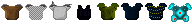
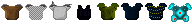

Noah Parker
Game & Web Programmer
Programmer
I am currently a student at Rochester Institute of Technology (RIT). My major is in Game Design and Development and I am interested in Artificial Intelligence (AI). I have been programming since 2013 and have experience in these languages: C++, C#, Java, HTML, and CSS.
I have achieved the rank of Eagle Scout in Boy Scouts as well as obtained by black belt. I consider myself a hard worker that gets what is needed done.
Read MorePublished Works
Null Sector
A tabletop Role-Playing Game set in a technological utopia where a benevolent AI rules. You can play as a master of the digital world and write programs that can change reality itself.
Contributions
Manager
Game Designer
Lore Writer
Lost and Found
A historical strategy card game of community, family, and lost and found objects.
Contributions
Knowledge Manager
Playtester
Group Projects
These are projects that I have done with other people. Working with others have been a very different experience than working on personal projects. Here are some that I am most proud of. These projects come from groups with many different people.
Beta Rangers
A 4-player, PvP brawler, where you take the role of a Beta Ranger as you try to fight your fellow rangers. Fighting over the only battery, you along with the other rangers must try to charge your piece of the mech to win.
Contributions
Manager
Production Lead
Programmer

Pulp Legends
Pulp Legends is a 2D couch co-op, side scrolling, platformer set in the Noir/Pulp Fiction Universe. You play as Detectives with odd powers who must work together in order to solve the murder of the police chief.
Contributions
Lead Programmer
Unnatural Selection
Unnatural Selection: Survival of the Weirdest, is a board game in which players evolve their creatures to collect various tokens before their opponents. It focuses on giving creatures mutations to survive enviroments.
Contributions
Rule Maker
Personal Projects
These projects I have worked on in my free time over the course of the last few years. They focus in areas that I am interested or I just find fun.
The main project that I show off here I created to learn more about AI through the use of Chess. I did the whole project by myself and it is my favorite and most invested project I have created.
Pawn to King
This is a C# project that I did to learn more about different forms of artificial intelligence (AI). I used the classic game of Chess as my base because it shows strategy with very little randomness to it. I built both the Chess base and the several different forms of AI seen within the project.
Read More
Depth Redemption
A Rogue-like game where you must fight your way through a lab and make your way down to the bottom floor. This game was originally made in Java but has been ported to Javascript with the help of Phaser, a Javascript gaming framework.
Read More


 
